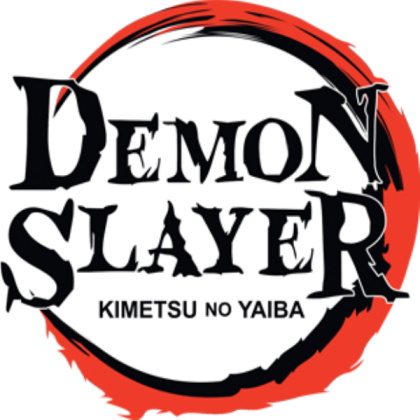

Kimetsu No Yaiba
Story
In Taisho-era Japan, Tanjiro Kamado is a kindhearted boy who makes a living selling charcoal. However, his peaceful life is shattered when a Demon slaughters his entire family. His little sister Nezuko is the only survivor, but she has been transformed into a Demon herself! Tanjiro sets out on a dangerous journey to find a way to return his sister to normal and destroy the Demon who ruined his life.
Characters of Kimetsu No Yaiba

Tanjiro Kamado
Tanjiro Kamado is the main protagonist of Demon Slayer: Kimetsu no Yaiba. He is a Demon Slayer in the Demon Slayer Corps, who joined to find a remedy to turn his sister, Nezuko Kamado, back into a human and to hunt down and kill demons, and later swore to defeat Muzan Kibutsuji, the King of Demons, in order to prevent others from suffering the same fate as him.
Zenitsu Agatsuma
Zenitsu Agatsuma is one of the main characters of Demon Slayer: Kimetsu no Yaiba and along with Inosuke Hashibira, a travelling companion of Tanjiro Kamado and Nezuko Kamado. He is also a Demon Slayer in the Demon Slayer Corps.


Inosuke Hashibira
Inosuke Hashibira is one of the main characters of Demon Slayer: Kimetsu no Yaiba and along with Zenitsu Agatsuma, a traveling companion of Tanjiro Kamado and Nezuko Kamado. He is also a Demon Slayer in the Demon Slayer Corps.
Nezuko Kamado
Nezuko Kamado is the deuteragonist of Demon Slayer: Kimetsu no Yaiba. She is a demon and the younger sister of Tanjiro Kamado and one of the two remaining members of the Kamado family. Formerly a human, she was attacked and transformed into a demon by Muzan Kibutsuji.

References:
About Kimetsu no Yaiba
Characters
Tanjiro
Zenitsu
Inosuke
Nezuko
Tanjiro Kamado
Tanjiro Kamado is the main protagonist of Demon Slayer: Kimetsu no Yaiba. He is a Demon Slayer in the Demon Slayer Corps, who joined to find a remedy to turn his sister, Nezuko Kamado, back into a human and to hunt down and kill demons, and later swore to defeat Muzan Kibutsuji, the King of Demons, in order to prevent others from suffering the same fate as him.
Zenitsu Agatsuma
Zenitsu Agatsuma is one of the main characters of Demon Slayer: Kimetsu no Yaiba and along with Inosuke Hashibira, a travelling companion of Tanjiro Kamado and Nezuko Kamado. He is also a Demon Slayer in the Demon Slayer Corps.
Inosuke Hashibira
Inosuke Hashibira is one of the main characters of Demon Slayer: Kimetsu no Yaiba and along with Zenitsu Agatsuma, a traveling companion of Tanjiro Kamado and Nezuko Kamado. He is also a Demon Slayer in the Demon Slayer Corps.
Nezuko Kamado
Nezuko Kamado is the deuteragonist of Demon Slayer: Kimetsu no Yaiba. She is a demon and the younger sister of Tanjiro Kamado and one of the two remaining members of the Kamado family. Formerly a human, she was attacked and transformed into a demon by Muzan Kibutsuji.